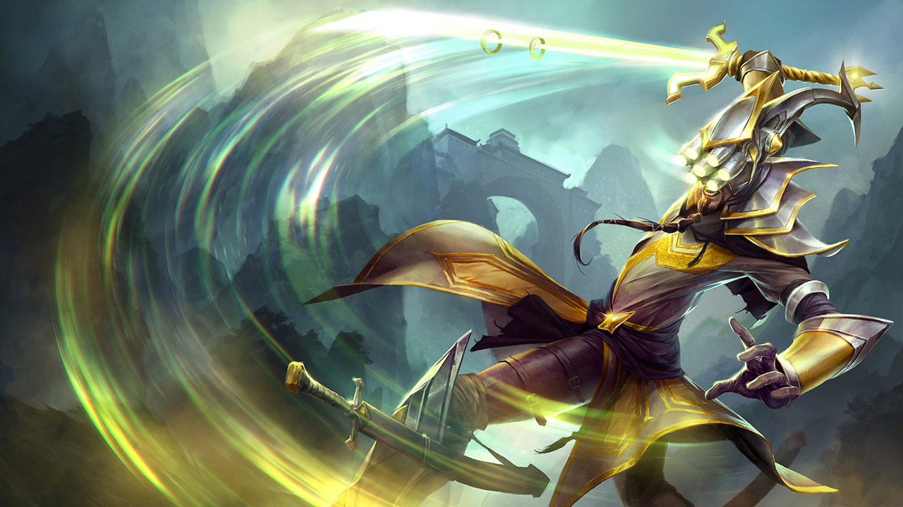

Jungle
Jungle is quite different than all of the other roles. Instead of farming minions for gold and exp, you defeat jungle monsters. However, that is not your only job. Junglers will also gank other lanes to try and scores. This sets the enemy laner behind and gets you and your laners ahead. This is extremely vital to winning games. You also need to take objectives on the map. These objectives are Dragon, Rift Herald, and Baron. Taking Dragon gives your team a small permanent buff. Taking Rift Herald lets you summon the Rift Herald to destroy enemy towers. Taking Baron will empower your minions to make them stronger and have more hp. Jungle is a role with high impact on everyone else in the game, so it’s key they do their job well. I’ll be talking about 2 different junglers, Master Yi, and Karthus.
Master Yi

Basic Abilities
Yi’s passive is Double Strike. Every few attacks, his attack will strike twice, dealing more damage.
Yi’s first basic ability is Alpha Strike. He teleports to a target enemy champion and becomes invincible for 1 second. During this time he strikes his target 4 times, dealing damage.
Yi’s second basic ability is Meditate. Yi meditates, healing him and making him take reduced damage from all sources. He cannot move during this ability.
Yi’s third basic ability is Wuju Style. Yi gains increased damage on all of his attacks.
Ultimate
Yi’s ultimate is Highlander. Yi gains movement speed, attack speed, and an immunity to slows for 7 seconds. If he gets a kill during this time, the duration of this ability is increased.
Karthus

Basic Abilities
Karthus’ passive is Death Defied. After dying, Karthus becomes invincible and can cast his abilities for free for 7 seconds. After this time, he dies like normal.
Karthus’ first basic ability is Lay Waste. Karthus blasts an area with magic, dealing damage to all units in range. If only one unit is hit, the abililty does twice as much damage
Karthus’ second basic ability is Wall of Pain. Karthus creates a wall that slow any enemies who are touching the wall.
Karthus’ third basic ability is Defile. Passively, Karthus gains mana when he kills a unit. When he activates the ability, he creates a zone around him that does damage to all enemies.
Ultimate
Karthus’ ultimate is Requiem. Karthus will chaarge for 3 seconds, then does damage to every enemy champ, regardless of where they are.
You can read more about Yi and Karthus on the official League of Legends website.